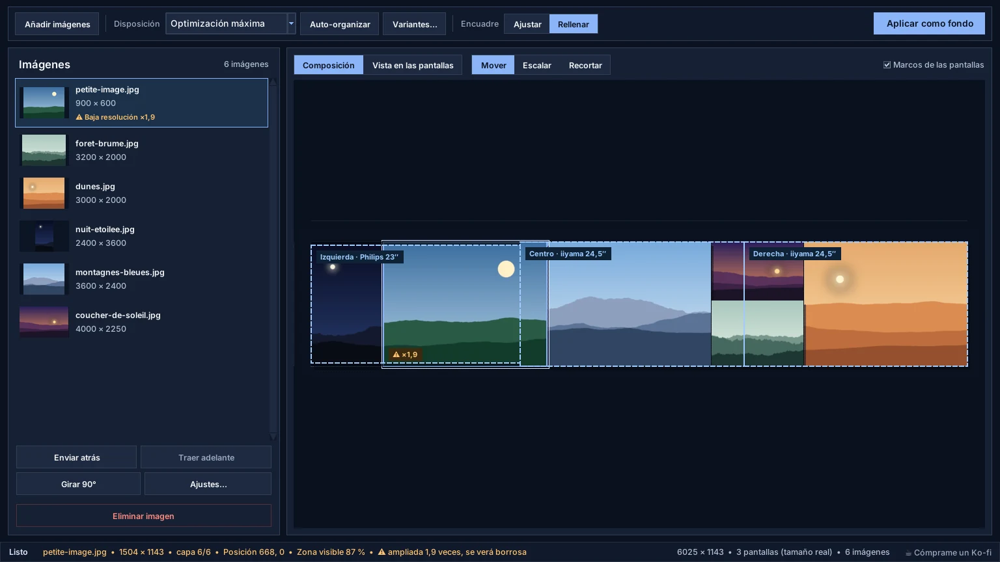
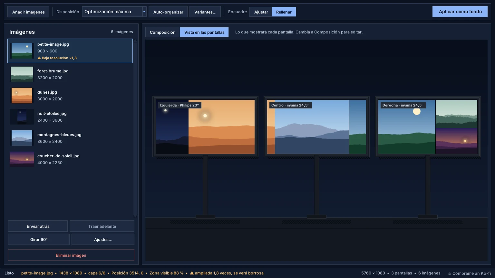
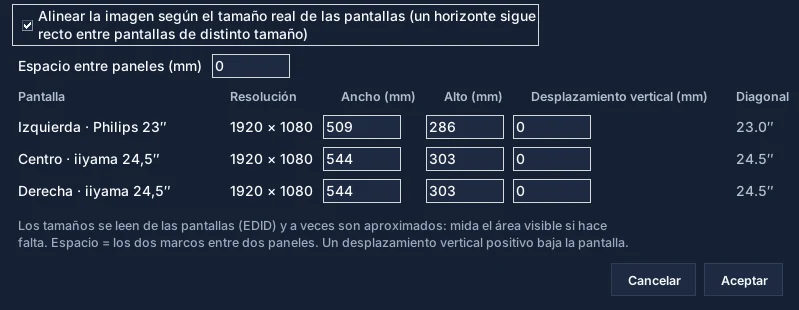

Añadir imágenes
Botón «Añadir imágenes» o arrastrar y soltar. Las fotos del teléfono se enderezan.
La interfaz está construida alrededor de un ciclo más simple: importar, colocar, escalar, reordenar, previsualizar y aplicar.
De la carpeta de fotos al escritorio en cinco pasos.
Botón «Añadir imágenes» o arrastrar y soltar. Las fotos del teléfono se enderezan.
Seis disposiciones, incluida la optimización máxima. Variantes… propone otras cuatro.
Ajustar conserva cada imagen entera; Rellenar cubre las pantallas recortando alrededor de las caras.
Mover, Escalar, Recortar, capas, rotación y retoques. Ctrl+Z deshace.
«Aplicar como fondo» corta la composición y la aplica pantalla por pantalla.
Cuatro zonas, de arriba abajo y de izquierda a derecha.
La barra de herramientas reúne lo que se usa siempre; el resto está en los menús Archivo, Imagen, Pantallas e Idioma.

Lo que mostrará cada pantalla, antes de aplicar.
La pestaña Vista dibuja sus pantallas como en el escritorio, con su nombre: «Izquierda · Philips 23″», «Centro · iiyama 24,5″»…

Para que una línea quede recta entre pantallas de distintos tamaños.
Menú Pantallas › Tamaño real de las pantallas… Marque la casilla: WallCraft coloca las pantallas según su tamaño físico, leído de la pantalla (EDID).

Descarga la build actual, prueba tu disposición de monitores y deja el repositorio de GitHub a mano para actualizaciones y código fuente.